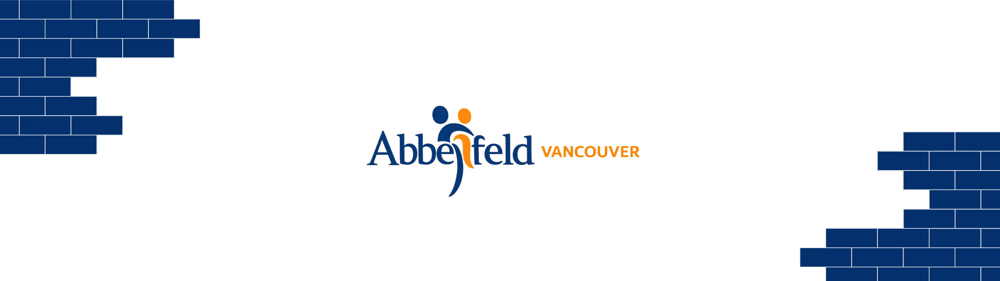
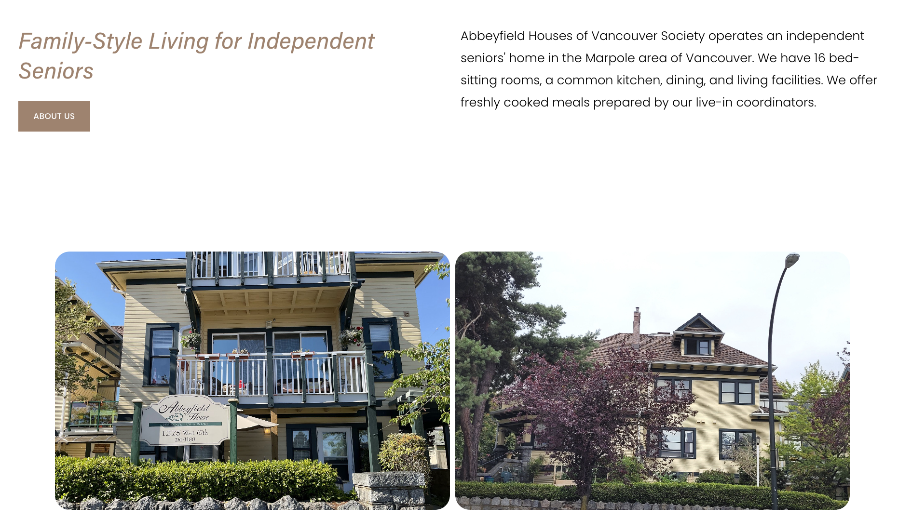
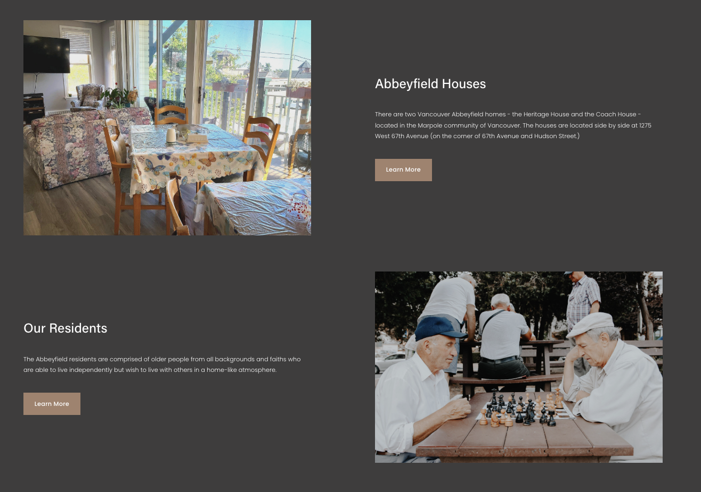
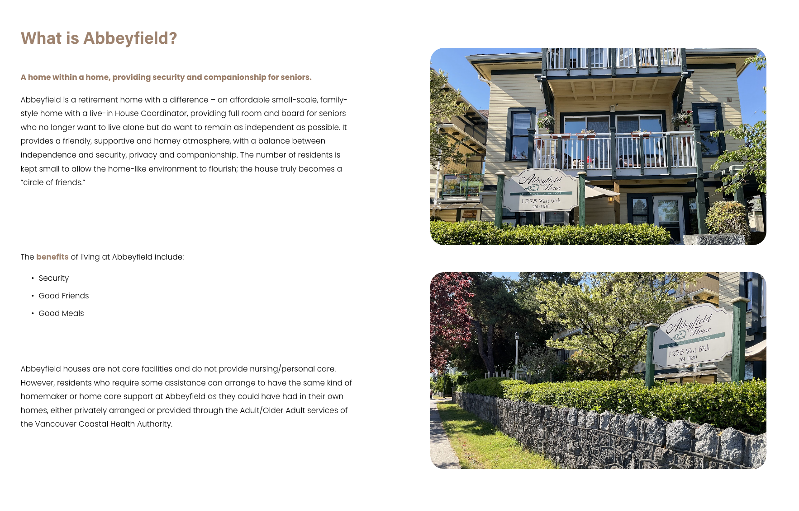
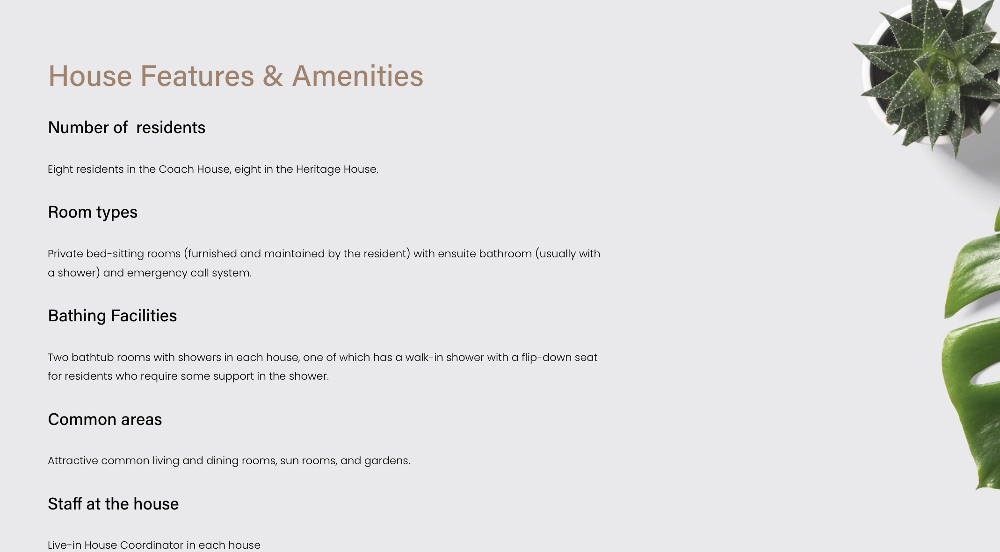
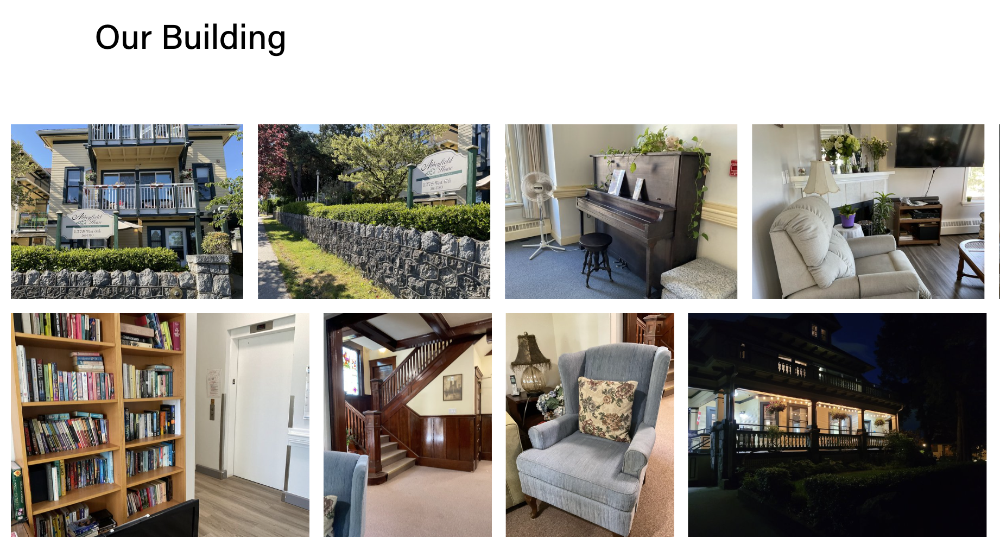
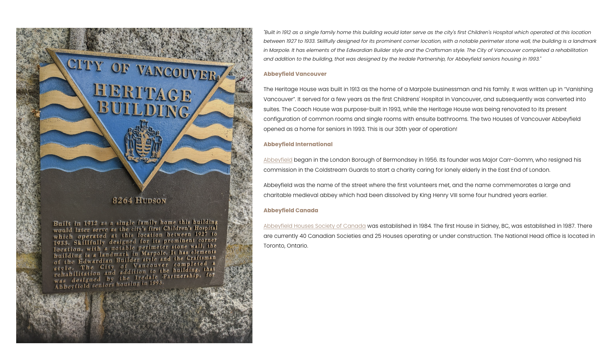
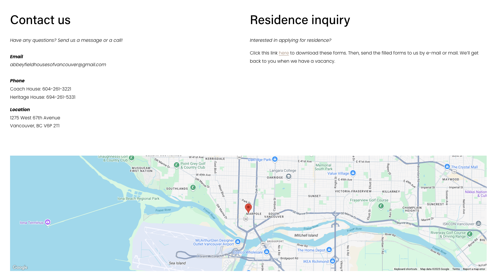

Overview
During my internship at Abbeyfield Vancouver, I led a comprehensive UX redesign of their official website. Abbeyfield Vancouver is a senior housing nonprofit that provides small, supportive homes for older adults — a mission that requires a website capable of earning trust quickly with seniors, their families, and potential community partners.
The original site lacked clarity in layout and navigation, and did not reflect the organization's mission effectively. I conducted a full content review, proposed new information architecture, and implemented a more modern and user-friendly interface — managing the entire process from audit to final deployment.
Home Page
Redesigned the homepage to provide a clear and warm introduction to Abbeyfield Vancouver. The previous homepage lacked structure and did not effectively communicate the organization's mission. I introduced a concise summary of who Abbeyfield is, paired with high-quality images showcasing the welcoming living environment.
The new design helps visitors — especially seniors and their families — quickly understand the purpose and atmosphere of the organization. The hierarchy was restructured so that the most important question ("What is Abbeyfield and is it right for me?") is answered above the fold, before any scroll.



On-Brand, Concise "About Us" Page
Created a brand-aligned "About Us" page to clearly introduce Abbeyfield Vancouver's values and mission. The previous version was text-heavy and inconsistent in tone. I restructured the content to focus on three key messages — who we are, what we do, and why it matters — while applying the organization's colors, typography, and visual language consistently.
The result is a welcoming, easy-to-read page that strengthens trust and clarity for first-time visitors. For a senior housing organization, the "About Us" page is often the deciding screen — families use it to assess whether the organization's values align with what they need for their loved one.
Consistent Design Across Informational Pages
Designed several supporting pages — House Features & Amenities, Building Gallery, Our History, and Contact Us — with a unified visual language that aligns with Abbeyfield Vancouver's brand. Each page was simplified to present key information in a clear and accessible way, prioritizing readability and intuitive layout.
Color usage, typography, and spacing remain consistent across all pages, contributing to a cohesive and trustworthy user experience. Consistency at this level communicates organizational stability — an important signal for users evaluating a long-term care decision.




Reflection
This internship taught me how much the audience shapes every UX decision. Designing for seniors and their families — users who may be navigating an emotionally charged process for the first time — required a level of clarity and warmth that goes beyond standard usability principles. The stakes of confusion are real and personal.
Audience-first architecture
Every structural decision in the redesign was traced back to the primary user: a family member helping an elderly parent explore their options. Information that matters to them comes first; everything else is secondary, no matter how important it seems from the organization's perspective.
Trust as a design outcome
For a senior housing nonprofit, the website's job is not primarily to inform — it's to earn enough trust that a visitor picks up the phone. Visual consistency, warm photography, and clear language work together to make the organization feel reliable and approachable.
End-to-end ownership
Managing the full redesign from content audit through final deployment was a different experience from single-deliverable design work. Understanding how every decision affects the whole — navigation, content, brand, layout — made every individual page decision more considered.